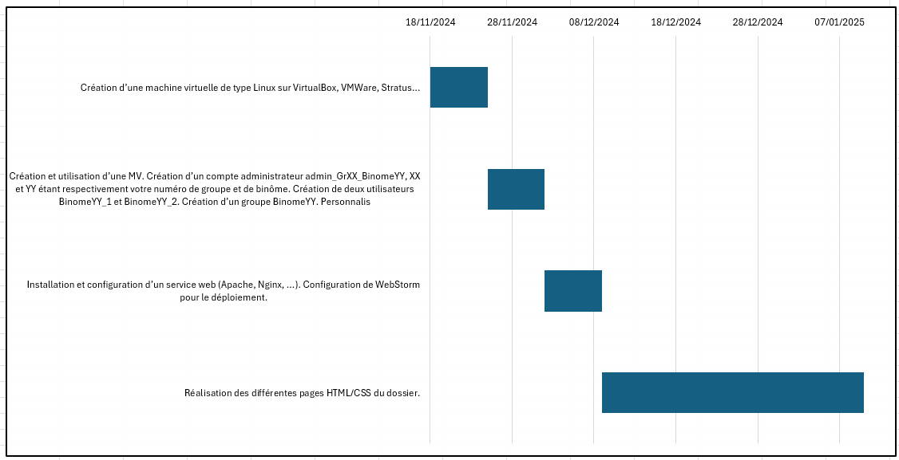

tetzetz

tetzzefetz
tetzetzfezfez
tetzetzfefgzezfez
| Type de virtualisation pour les environnements VirtualBox, VmWare Workstation et Stratus | La virtualisation est une technologie qui permet de créer des versions virtuelles d’un système informatique ou de ressources (par ex : serveurs, stockage, réseau) pour optimiser l’utilisation des ressources physiques et améliorer la flexibilité et la gestion des infrastructures. Elle permet d'exploiter toute la capacité d'une machine physique en la répartissant entre de nombreux utilisateurs ou environnements différents |
|---|---|
| Forme/lieu de sauvegarde de la machine virtuelle créée | note la diff ! |
tetzetz
tetzzefetz
tetzetzfezfez
tetzetzfefgzezfez